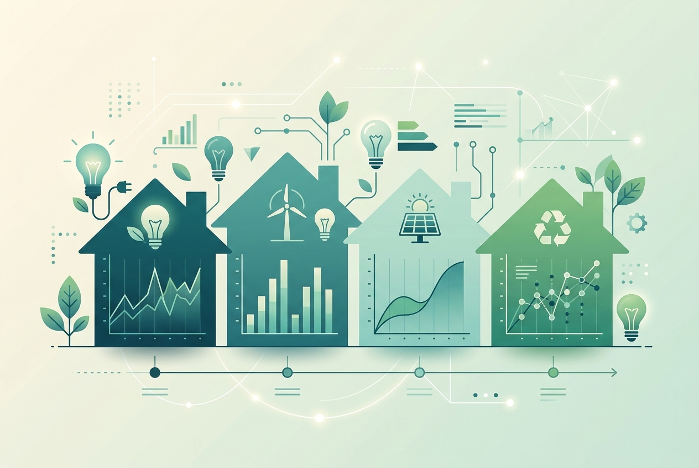
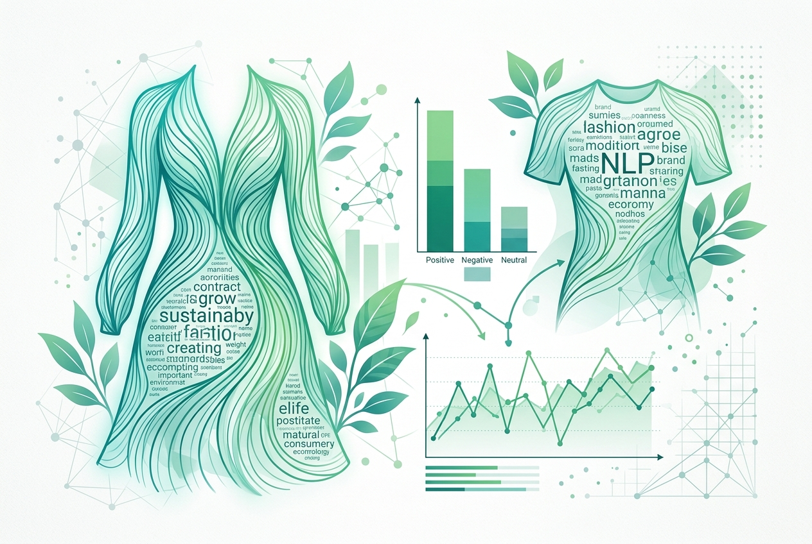

Portfolio

Do students who consider themselves "environmentally conscious" actually consume less energy? This regression analysis of UEA student residences uncovers the gap between sustainable self-image and real energy-saving behaviour, offering evidence-based policy nudges.

Sentiment analysis on 1,052 tweets comparing Logistic Regression and SVC models to decode the attitude”“behaviour gap in green fashion consumption. Uncovering what consumers really think versus how they actually shop.
More Projects
Designed a nudge-based intervention to shift household energy habits, grounded in behavioural change frameworks rather than pure information campaigns.
Literature ReviewA systematic review of privacy-preserving techniques in data mining, weighing their strengths, weaknesses and where the field is headed next.
Data ScienceBuilt and compared supervised classification models to predict patient health risk from an anonymised dataset, from EDA through to final model selection.
Client ResearchFocus groups and secondary research into what really drives grocery-buying decisions in Indian households, translated into recommendations for a consumer client.
Curious about the methodology?